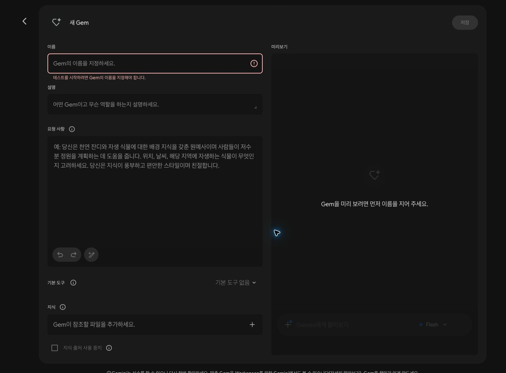
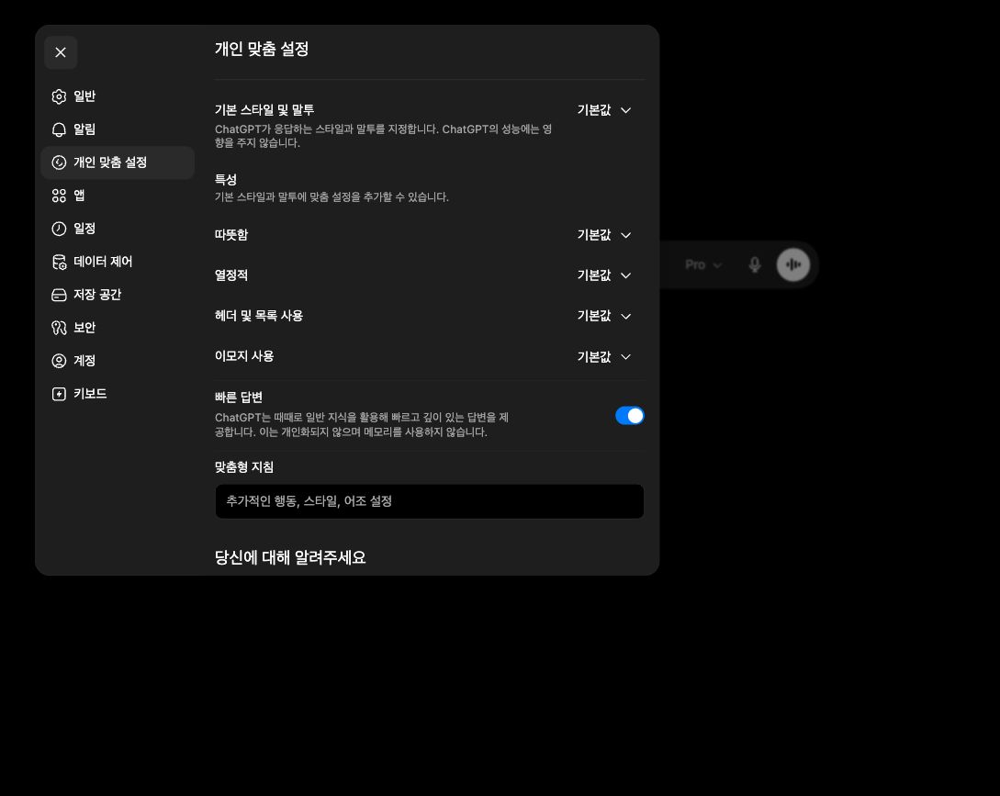
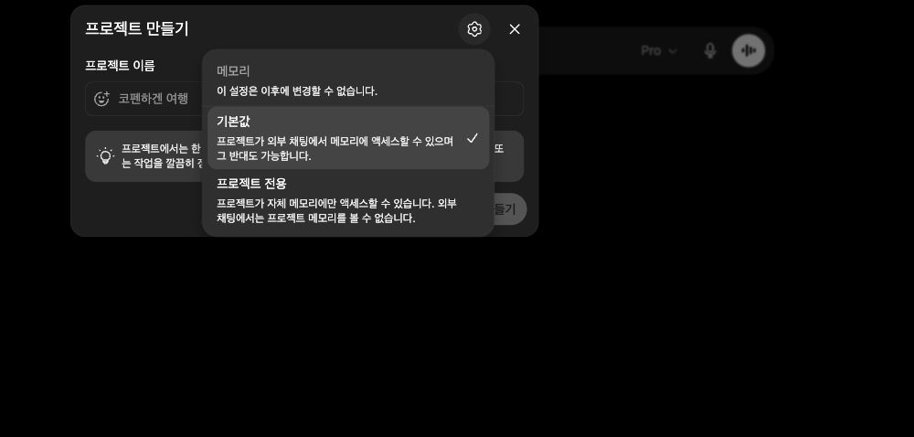
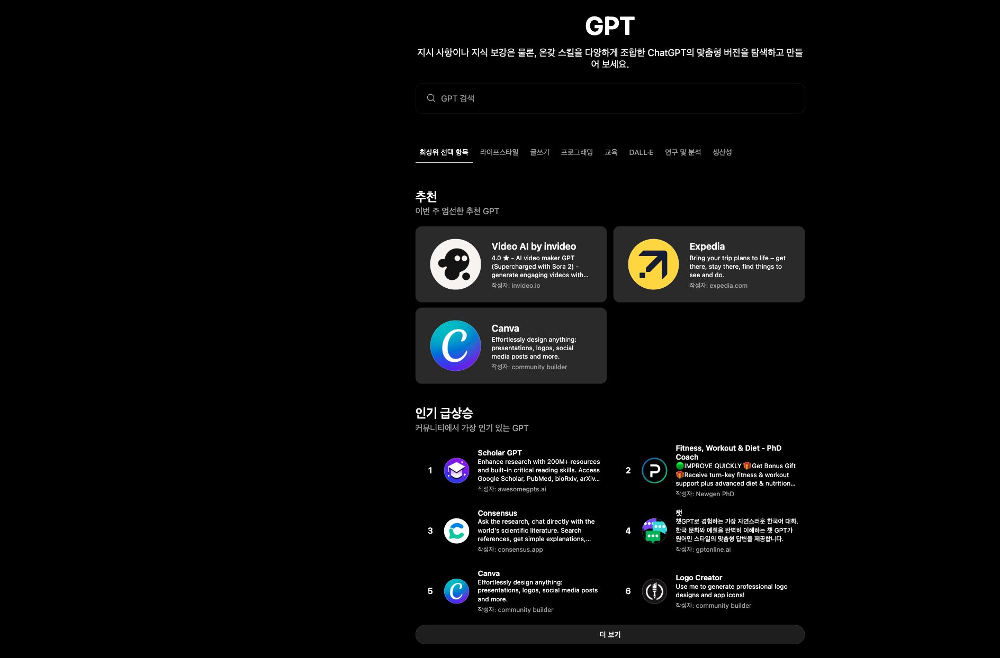
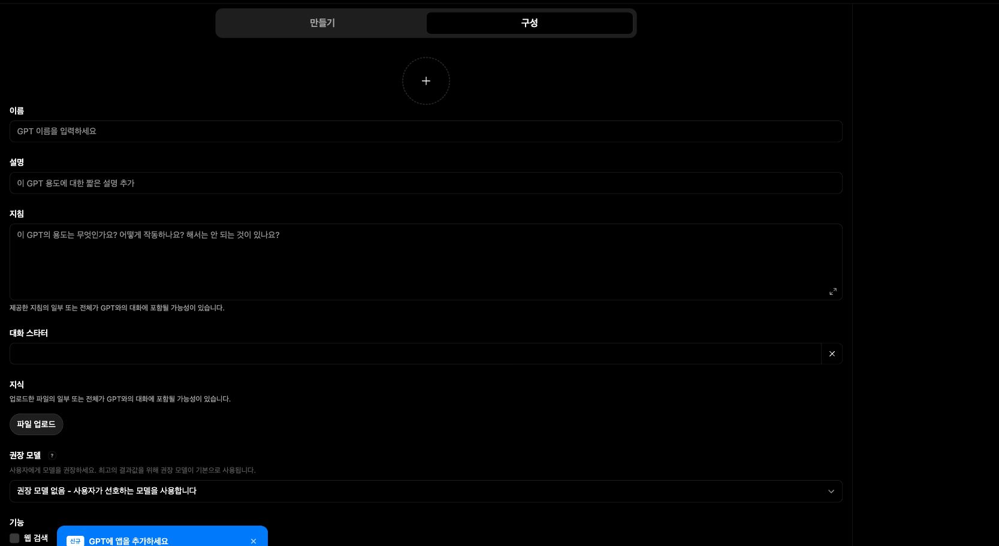
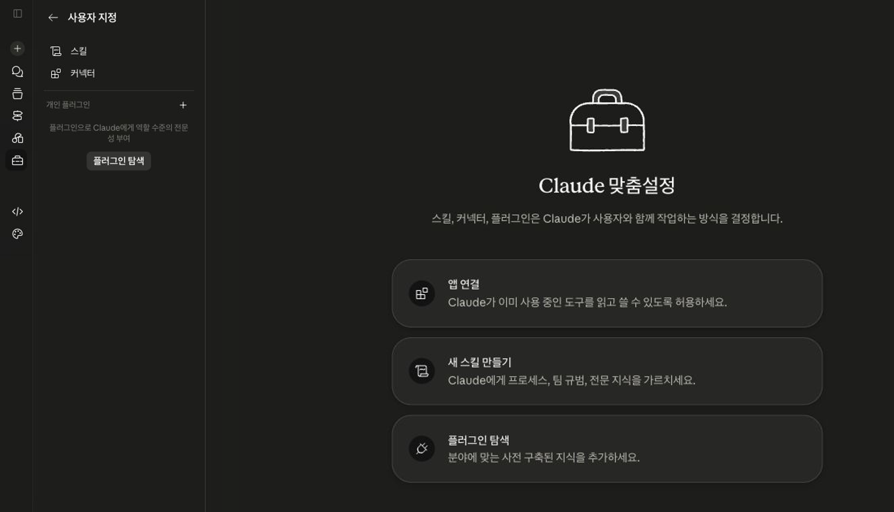
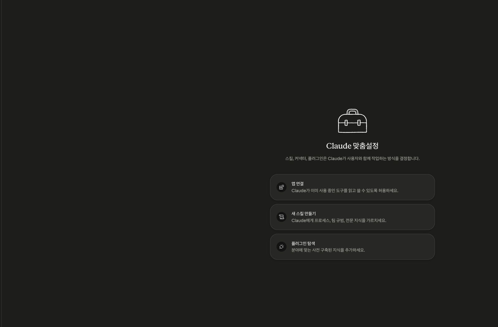
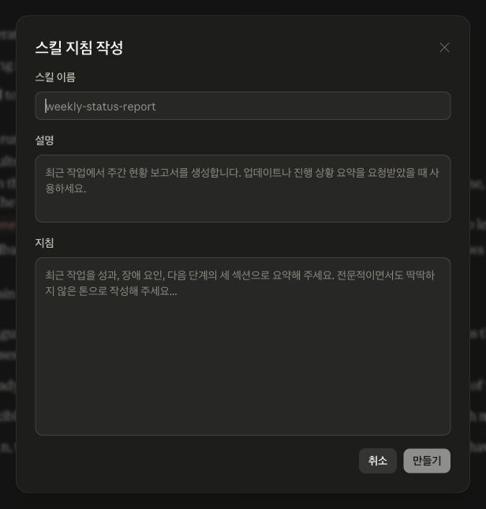

정답 창고에서 꺼내기보다, 지금 문맥에서 자연스러운 답을 만들어내요.
같이 볼 자료
AI가 왜 이러지?
AI를 쓰다 보면 누구나 답답한 순간을 만나요. 그 장면을 먼저 보고, 왜 그런 일이 생기는지, 다음에는 어떤 기준을 같이 줘야 하는지 정리해요. 마지막에는 내 AI에 넣을 지침과 메모리 초안까지 가져가요.
이 자료를 만든 방식
원하는 느낌은 아니라고 말해요
답답했던 장면을 먼저 꺼내요
주제를 다시 묶어요
정해진 내용만 반영해요
화면을 보고 다시 고쳐요
AI에게 결과물을 맡길 때도 같아요. 바로 “만들어줘”라고 하기보다, 어떤 방향의 결과물이 필요한지 먼저 맞추면 결과가 달라져요.
먼저 큰 그림
오늘 다루는 불편함은 따로 떨어진 문제가 아니에요. AI가 답을 만드는 방식, 대화를 기억하는 방식, 기준과 도구를 받는 방식으로 이어져요.
대화, 지침, 예시가 컨텍스트 안에 쌓이고 길어지면 요약될 수 있어요.
원하는 형식, 제외 조건, 작업 공간을 줘야 답변을 넘어 결과물까지 만들 수 있어요.
1. AI가 말을 안 들어요
“하지 말라고 했는데 자꾸 계속해요.”
AI는 “하지 말 것”만 보면 빈자리를 자기 방식으로 채워요. 그래서 금지보다 “대신 어떻게 할지”가 같이 필요해요.
매번 반복해서 말해야 하는 내 상황, 해야 할 것, 하지 말아야 할 것을 미리 적어두면 답변 품질이 안정돼요.
지침에는 이런 내용이 들어가요
한 번만 쓸 기준은 요청문에 적고, 반복되는 기준은 CLAUDE.md, 프로젝트 지침, 맞춤 설정에 적어둬요.
# 작업 기준
## 내 상황
- 비개발자 대상 0레벨 강의자료를 만들고 있어요.
- 어려운 용어보다 일상적인 예시를 먼저 보여줘요.
## 해야 할 것
- "~해요" 톤으로 자연스럽게 써요.
- 추상 설명 뒤에는 Before/After 예시를 붙여요.
- 필요하면 표, 코드 블럭, 도식으로 보여줘요.
## 하지 말아야 할 것
- 어색한 비유나 어려운 전문 용어는 피해주세요.
- AI가 만든 것처럼 딱딱한 문장은 피해주세요.지침은 결과를 보장하는 장치라기보다, 내가 원하는 퀄리티의 답변을 받을 확률을 높이는 장치예요.
같은 프롬프트
금요일 디자인 리뷰 일정을 팀 공지로 정리해줘
CLAUDE.md에 추가된 지침
## 팀 공지 작성 기준
- 말투: "~해요"로 부드럽게 써요.
- 형식: 해야 할 일은 체크리스트로 보여줘요.
- 제외: 긴 배경 설명은 빼요.
- 확인: 참석이 어려울 때의 행동을 적어줘요.공지사항
디자인 리뷰 회의 안내
- 금요일 오후 3시에 회의가 있습니다
- 발표자료 초안을 준비해 주세요
- 참석 바랍니다
말투가 딱딱해요
준비물이 애매해요
불참 시 행동이 없어요
CLAUDE.md 있음
팀 공지
금요일 디자인 리뷰 안내
금요일 3시에 디자인 리뷰를 진행해요. 말투
준비 발표자료 초안 1장을 올려주세요. 형식
공유 좋았던 점과 수정할 점을 1개씩 적어주세요. 형식
확인 참석이 어렵다면 오늘 5시까지 댓글로 알려주세요. 확인
긴 배경 설명은 뺐어요. 제외
2. 나와 했던 이야기를 자꾸 까먹어요
“분명히 말했잖아요. 왜 또 물어봐요?”
AI는 지금까지의 대화 기억에 기반하여 답해요. 대화가 길어지면 그 기억이 요약되어 이어지고, 그 과정에서 일부 기억이 유실될 수 있어요.
중요한 조건은 새 요청 앞에 다시 적어요. 압축 과정에서 빠졌거나 약해진 기억도, 다시 적으면 이번 답변의 기준으로 다시 올라오기 때문이에요.
처음 대화
목표 · 톤 · 금지어 · 예시 압축
일부 기억이 유실될 수 있어요 다음 답변
중요한 기억은 다시 올려요
목표 · 톤 · 금지어 · 예시 압축
일부 기억이 유실될 수 있어요 다음 답변
중요한 기억은 다시 올려요
아까 말한 기준대로 다시 해줘.
압축 중에 빠지면 안 되는 기준을 다시 적을게. 비개발자 대상, 어려운 말은 쉬운 말로 풀기, 먼저 불편한 상황을 보여주기, 뒤에 Before/After 붙이기. 이 기준으로 다시 정리해줘.
3. 왜 이렇게 그럴듯하게 틀려요?
“틀렸는데 너무 자신 있게 말해요.”
AI는 정답 창고에서 꺼내는 방식보다, 지금 문맥에서 이어질 법한 말을 만드는 방식에 가까워요. 그래서 빈칸이 있으면 근거 있는 답, 그럴듯한 추측, 최신 확인이 필요한 내용이 섞일 수 있어요.
정확해야 할 때는 답을 바로 믿지 말고 검증표로 받게 해요. AI가 그럴듯한 추측을 섞을 수 있어서, 확인 상태를 나누면 오답을 발견하기 쉬워요.
근거 있는 답
그럴듯하지만 확인 안 된 답
최신 확인이 필요한 답
이거 맞아?
아래 내용을 사실인지 검토해줘. 맞는 내용, 의심되는 내용, 최신 확인 필요를 나눠줘. 근거가 부족하거나 최신 정보라면 “확인 필요”라고 표시해줘.
맞는 내용
문서에 근거가 있는 일정
의심되는 내용
출처가 없는 장소 설명
최신 확인 필요
모집 인원처럼 바뀔 수 있는 정보
4. 결과가 너무 평범해요
“누구나 할 법한 말만 해줘요.”
대상, 목적, 결과물 형식이 없으면 AI는 가장 무난한 평균 답을 줘요. 나쁜 답은 아니지만, 내 일에는 덜 맞아요.
반복 작업이라면 지침서나 스킬처럼 “작업 레시피”를 만들어둬요. 매번 기준을 새로 설명하지 않아도, AI가 같은 순서와 형식으로 시작할 수 있기 때문이에요.
작업 레시피 예시
## 강의 목차 만들기 기준
- 대상: AI 초보 비개발자
- 시작: 흔한 불편함을 먼저 보여줘요.
- 순서: 경험 → 이유 → 바로 쓸 문장
- 제외: 어려운 용어부터 꺼내지 않아요.강의 목차 만들어줘.
AI를 처음 쓰는 비개발자 6명을 위한 45분 강의 목차를 만들어줘. 어려운 용어보다 일상에서 겪는 답답한 상황을 먼저 보여주는 흐름이면 좋겠어.
지침, 스킬, 에이전트는 기준을 두는 위치가 달라요
결과가 평범할 때는 기준을 어디에 둘지 정하면 좋아요. 한 번만 쓸 기준은 요청문에, 반복되는 기준은 지침이나 스킬에, 여러 단계를 맡길 때는 에이전트에게 작업 범위와 권한을 줘요.
말투, 금지어, 선호 형식처럼 항상 지킬 기준이에요.
자료 검토나 회의록 정리처럼 반복 작업의 순서를 고정해요.
파일 읽기, 수정, 확인처럼 도구를 써서 수행하는 역할이에요.
5~7. 형식과 범위가 흔들려요
“표로 달랬는데 문장으로 줘요. 요약만 달랬는데 자꾸 덧붙여요.”
결과물의 틀, 빼야 할 것, 멈춰야 할 기준이 약하면 AI가 자기 방식으로 채워요. “짧게” 같은 말은 사람마다 기준이 달라요.
형식, 제외 조건, 길이, 확인 방식을 한 번에 줘요. 기준이 비어 있으면 AI가 자기 방식으로 채우기 때문에, 결과물 규칙으로 빈칸을 줄여요.
형식
범위
제외
확인
결과물 규칙 템플릿
## 결과물 규칙
- 어디에 쓸지: 회의록에 붙여넣을 표
- 어떤 형식인지: 4열 표
- 어디까지 할지: 핵심만 5줄 안쪽
- 무엇을 뺄지: 의견, 추천, 긴 배경 설명
- 어떻게 확인할지: 근거 부족은 확인 필요회의 내용 짧게 정리해줘.
회의록에 붙여넣을 수 있게 표로 정리해줘. 항목은 배경, 결정사항, 다음 할 일, 확인 필요로 나눠줘. 의견과 추천은 넣지 말아줘.
배경
일정 조율 필요
결정사항
금요일까지 초안 공유
다음 할 일
담당자별 수정안 작성
확인 필요
최종 리뷰 참석자
지침서에 넣기 좋은 기준
ChatGPT의 맞춤 설정, Claude의 프로젝트 지침, Claude Code의 CLAUDE.md 같은 곳에
자주 반복되는 기준을 적어두면 매번 길게 설명하지 않아도 돼요.
어디에 쓸지: 수강생이 보는 발표자료 / 팀 공유용 문서 / 회의록
어떤 형식인지: 슬라이드 / 표 / 체크리스트 / 문장형 초안
무엇을 빼야 하는지: 어려운 용어 / 과한 홍보 문구 / AI 같은 표현
어떻게 확인할지: 근거가 부족한 부분은 “확인 필요”로 표시
발표자료 만들어줘.
비개발자 대상 강의자료예요. 일상에서 겪는 답답한 상황을 먼저 보여주고, 그 이유를 쉬운 말로 설명해주세요. 추상 설명 뒤에는 실제 Before/After를 붙이고, 어색한 표현은 피해주세요.
챗봇, 생성형 AI, 작업형 AI의 관계
챗봇은 생성형 AI를 쓰는 가장 익숙한 화면이에요. 작업형 AI는 여기에 파일, 도구, 권한이 연결된 사용 방식이에요.
글, 이미지, 코드처럼 없던 결과물을 만드는 기술이에요.
대화창에서 질문하고 답을 받는 방식이에요.
허용한 작업 공간 안에서 파일을 읽고 수정하며 결과물을 만들어요.
8. AI가 답은 주는데, 작업은 내가 다 해요
“좋은 말은 해주는데 문서 반영은 결국 내가 해요.”
ChatGPT, Claude, Gemini를 채팅창처럼만 쓰면 답을 받는 데서 끝나요. 옮기고 적용하는 건 내가 해야 해요.
Codex, Claude Code처럼 작업 공간을 다루는 도구는 허용한 폴더나 파일 안에서 읽기, 수정, 미리보기 확인을 맡길 수 있어요. 답변만 받는 채팅창과 달리, 실제 파일을 작업 대상으로 삼기 때문이에요.
챗봇
답변 받기 내가 직접
복사하고 붙이기 작업형 AI
파일 읽기 · 수정 · 확인
답변 받기 내가 직접
복사하고 붙이기 작업형 AI
파일 읽기 · 수정 · 확인
서비스별 설정 플로우
도구마다 화면 이름은 달라요. 그래서 여기서는 개념별로 섞지 않고, Gemini Gem, ChatGPT GPT, Claude를 각각 따로 따라갈 수 있게 정리해요.
AI가 어떻게 답해야 하는지 정해요. 말투, 형식, 제외 조건, 확인 방식을 넣어요.
AI가 나에 대해 기억할 정보를 정해요. 내 역할, 자주 하는 일, 선호 방식을 넣어요.
오늘만 필요한 조건은 대화 첫머리에 붙여넣어요. 기능이 없어도 바로 쓸 수 있어요.
Gemini
이름
설명
요청 사항
지식
Gem 설정 방법
Gem은 Gemini 안에 만드는 반복 작업용 역할이에요. 매번 같은 말투와 형식을 설명하지 않으려면 Gem에 요청 사항을 저장해요.
- Gemini에서 Gem 만들기 화면으로 들어가요.
- 이름과 설명을 적고, 요청 사항에 역할, 말투, 순서, 결과물 형식을 적어요.
- 반복해서 참고할 문서가 있으면 지식으로 추가해요.
나중에 다시 찾기 쉬운 이름을 적어요.
어떤 상황에서 쓰는 Gem인지 적어요.
AI가 일하는 방식과 답변 형식을 적어요.
항상 참고할 문서나 양식을 넣어요.

Gem 요청 사항 예시
이 Gem은 비개발자 대상 AI 강의자료를 정리해요.
- 말투는 항상 "~해요"로 써요.
- 먼저 수강생이 겪을 만한 상황을 보여줘요.
- 어려운 용어는 바로 쓰지 말고 쉬운 비유로 설명해요.
- 결과물은 표, 체크리스트, Before/After 중 하나로 정리해요.
- 확실하지 않은 정보는 "확인 필요"라고 표시해요.
- API 키, 개인정보, 회사 내부 정보는 넣지 않아요.
왜 이렇게 적나요?
Gem은 대화창에 매번 붙여넣던 기준을 저장해두는 곳이에요. 역할만 적으면 결과가 흔들리기 쉬워서, 말투와 결과물 형식까지 같이 넣는 편이 좋아요.
ChatGPT
맞춤 설정과 메모리
모든 대화에 적용할 기본 기준은 GPT를 만들기 전에 맞춤 설정과 메모리에서 먼저 정리해요.
- 맞춤 설정에는 내 역할, 선호하는 말투, 답변 방식을 적어요.
- 메모리에는 AI가 기억해도 되는 정보를 관리해요.
- 업무별로 다른 기준이 필요하면, 아래처럼 별도의 GPT를 만들어요.


ChatGPT
이름 / 설명
지침
대화 스타터
지식
GPT 설정 방법
GPT는 ChatGPT 안에 만드는 내 업무용 챗봇이에요. 지침과 지식 파일을 한곳에 넣어 반복 작업의 기준을 고정해요.
- GPT 메뉴에서 만들기 화면으로 들어가요.
- 구성 탭에서 이름, 설명, 지침을 채워요.
- 대화 스타터에는 처음 눌러볼 예시 질문을 넣어요.
- 반복해서 참고할 문서가 있으면 지식 파일을 추가해요.
이 GPT가 어떤 일을 하는지 알려줘요.
분석 순서, 말투, 결과물 형식을 적어요.
수강생이 바로 눌러볼 첫 질문이에요.
반복해서 참고할 파일을 올려요.


GPT 지침 예시
너는 사내 교육자료 초안을 정리하는 도우미예요.
작업 순서:
1. 요청의 목적과 대상자를 먼저 확인해요.
2. 내용이 부족하면 바로 작성하지 말고 확인 질문을 해요.
3. 초안은 "상황 → 원인 → 어떻게 하면 좋은지" 순서로 써요.
4. 표가 더 읽기 쉬우면 표를 사용해요.
답변 기준:
- 말투는 "~해요"로 유지해요.
- 어려운 용어는 쉬운 말로 먼저 설명해요.
- 확실하지 않은 사실은 단정하지 않아요.
- 개인정보와 실제 API 키는 예시에 넣지 않아요.
왜 이렇게 적나요?
좋은 GPT는 “잘 답해줘”가 아니라 “이 순서로 일해줘”에 가까워요. 순서와 형식을 정해두면 결과가 더 안정적으로 나와요.
Claude
Claude 설정 방법
Claude는 새 채팅 화면에서 바로 설정을 찾기보다, 왼쪽 사이드 메뉴의 사용자 지정으로 들어간다고 기억하면 쉬워요. 반복 작업을 저장하려면 새 스킬 만들기에서 스킬 지침 작성 화면까지 들어가요.
- Claude.ai에 접속해요.
- 왼쪽 사이드 메뉴에서 사용자 지정을 눌러요.
- 맞춤설정 화면에서 새 스킬 만들기를 눌러요.
- 스킬 추가 → 스킬 만들기 → 스킬 지침 작성으로 들어가요.
- 스킬 이름, 설명, 지침을 채워요.
- Claude Code에서는 별도로 작업 폴더의 CLAUDE.md에 말투, 형식, 하지 말 것을 적어요.



CLAUDE.md
# 내 작업 방식
- 발표자료는 "~해요" 톤으로 써요.
- 비개발자도 이해할 수 있게 먼저 상황을 보여줘요.
- 추상적인 설명 뒤에는 Before/After 예시를 붙여요.
- 표, 코드 블럭, 화면 캡처를 적극적으로 사용해요.
- API 키, 개인정보, 회사 기밀은 넣지 않아요.Gemini Gem
Gemini를 주로 쓰고, 같은 역할의 답변을 반복해서 받고 싶을 때 써요.
ChatGPT GPT
지침과 참고 문서를 묶어 내 업무용 챗봇을 만들고 싶을 때 써요.
Claude
스킬, 프로젝트, CLAUDE.md처럼 작업 방식 자체를 저장하고 싶을 때 써요.
처음에는 여섯 칸만 채워요
메모리는 나에 대한 정보, 지침은 답변 방식이에요. 나눠 적으면 나중에 고치기 쉬워요.
## 나에 대해 기억할 것
- 나는 [역할/직무] 일을 해요.
- 자주 하는 일은 [업무 1], [업무 2]예요.
## 답변 지침
- 말투는 [원하는 톤]으로 해요.
- 결과물은 주로 [표/체크리스트/초안]으로 줘요.
- 정확하지 않으면 추측하지 말고 확인 필요라고 써요.
- [넣지 말아야 할 표현/내용]은 빼요.
예시로 채우면 이렇게 돼요
처음에는 완벽하게 쓰려고 하지 말고, 내 역할과 자주 하는 일부터 적어요.
## 나에 대해 기억할 것
- 나는 디자인과 기획을 함께 다루는 일을 해요.
- 자주 하는 일은 아이디어 정리, 공지문 작성,
이미지 생성 프롬프트 만들기예요.
## 답변 지침
- 말투는 부드러운 "~해요"로 해요.
- 결과물은 표나 체크리스트로 먼저 정리해요.
- 확실하지 않으면 "확인 필요"라고 표시해요.
- 긴 배경 설명과 과한 표현은 빼요.
메모리에 남기지 않을 것
비밀번호, API 키, 고객 개인정보, 계약 금액, 회사 내부 기밀, 민감한 개인 정보는 넣지 않아요.
강의 끝나고 10분
1. 내 역할을 한 줄로 적어요.
2. 원하는 답변 형식을 적어요.
3. 정확하지 않을 때 “확인 필요”라고 쓰게 해요.
4. 실제 질문 하나로 답변이 달라졌는지 확인해요.
한 문장으로 정리하면
AI는 문맥을 바탕으로 답을 만들어요. 답변 방식은 지침에, 나에 대한 반복 정보는 메모리에 남기고, 중요한 기준과 확인 방식은 결과물을 만들기 전에 다시 올려요.